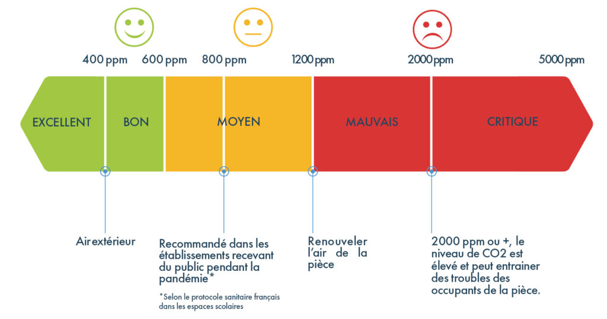
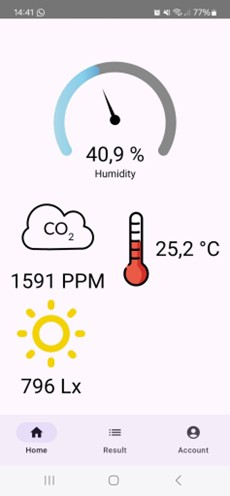
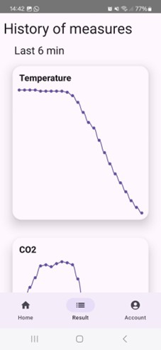
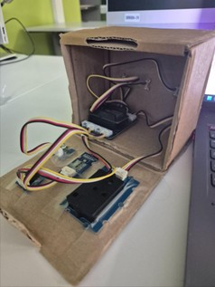
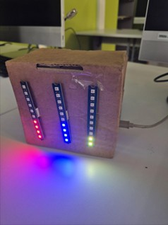

Station météo
Le projet
Ce projet en binôme a été réalisé dans le cadre du cours IoT (Internet of Things). Nous avions comme objectif de créer un objet en utilisant un ESP-32 et de le faire communiquer avec une application mobile. Avec mon binôme, nous avons choisi de faire un station météo capable de récupérer la température, l'humidité, la pression, la quantité de lumière et la concentration en CO2.
Pour mener ce projet à bien, nous avons suivi les étapes suivantes :
- Création de l'objet et des branchements
- Mise en place de la base de données
- Écriture du code de l'objet
- Création de l'application
L'objet
L'objet que nous avons conçu est constitué de 3 bandeaux LED, 3 capteurs et d'un buzzer. Voici son fonctionnement : une boucle tourne en permanence et récupère les données via les différents capteurs, ensuite, les bandeaux LED et le buzzer sont mis à jour.
Mais à quoi servent ces LEDs et ce buzzer?
Le premier bandeau (rouge), sert à afficher la température, le deuxième (bleu), montre le niveau d'humidité, et enfin, le dernier (vert), indique la saturation de la pièce en CO2. Cependant, le problème est qu'une pièce trop saturée en CO2 peut être dangereuse pour la santé.
Voici un schéma qui représente les seuils

Si jamais le niveau de CO2 dans la pièce dépasse ce seuil critique, l'objet se transforme alors en véritable alarme. Les 3 bandeaux LED se mettent à clignoter en rouge, et le buzzer emet un puissant son ressemblant à une alarme incendie. Cela continue jusqu'à ce que le niveau de CO2 redescende sous un seuil non dangereux ou que l'objet soit débranché.
Enfin, après toute ces étapes, l'ESP-32 rassemble toutes les données récoltées au sein d'un JSON et les envoies sur une base de données Firebase à interval de 10 secondes.
L'application
L'application sert à consulter ces données à distance, et ce, en temps réel. Lorsqu'on la lance pour la première fois, on doit se connecter au même compte que l'objet utilise. Ensuite, elle met en place un listener qui "écoute" la base de données lié au compte. Ainsi, dès qu'une nouvelle entrée est ajoutée, l'application le détecte et met à jour l'affichage en conséquence.
Il y a deux pages principales sur l'application, le menu d'accueil, où nous pouvons voir la empérature, le niveau d'humidité, de lumière et bien-sûr, le taux de CO2. La seconde page, quant à elle, offre plusieurs graphiques. Il y en a un pour chaque donnée, et ceux-ci nous permettent de voir et consulter l'historique des valeurs.
Quelques images
Voici des captures d'écrans de l'application et des photos de la maquette de l'objet.



